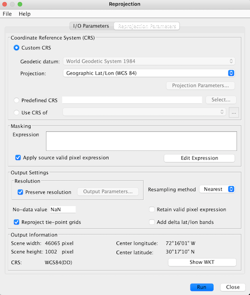

| resampling |
|
Here you can resample a multi-size product to a single-size product. A multi-size product is a product in which bands are of different sizes and/or resolutions. This can be useful for those instances when a SNAP feature is not supported for a multi-size product.
After the new product has been created, you can change to the Product Explorer in order to open an Image View for a band of the new product.
Source ProductName: Here the user selects the source product. The combo box presents a list of all products opened in the Sentinel Toolbox. The user may select one of these or, by clicking on the button next to the combo box, choose a product from the file system. Target ProductName: Used to specify the name of the target product. Save as: Used to specify whether the target product should be saved to the file system. The combo box presents a list of file formats. The text field allows to specify a target directory. Open in SNAP: Used to specify whether the target product should be opened in the Sentinel Toolbox. When the target product is not saved, it is opened in the Sentinel Toolbox automatically. |
 |
Reference bandThe band with the reference size. All other nodes will be resampled to match it's size. The user can select any of the bands available in the product. Interpolation MethodDefines how bands shall be resampled from a coarser grid onto a finer grid. The following methods are available: Nearest: Every pixel value in the output product is set to the nearest input pixel value. This is always used for flag and index bands. Bilinear: Calculation of the new pixel value is performed by the weight of the four surrounding pixels. Bicubic: Calculation of the new pixel value is performed by weighting the 16 surrounding pixels. Aggregation MethodDefines how bands shall be resampled from a finer grid onto a coarser grid. In this case, multiple pixel values have to be combined to a single pixel value. (See also Resampling Methods.) The following methods are available: First: Every pixel value in the output product is set to the nearest input pixel value. Min: Of all source pixel values that need to be combined, the smallest is set as output pixel value. Max: Of all source pixel values that need to be combined, the largest is set as output pixel value. Mean: Every pixel value in the output product is set to the mean of all source pixel values that need to be combined. Median: Every pixel value in the output product is set to the median of all source pixel values that need to be combined. Flag Aggregation MethodDefines how flag bands shall be resampled from a finer grid onto a coarser grid. In this case, not only multiple pixel values have to be combined to a single pixel value, but also multiple flags. The following options are available: First: Every pixel value in the output product is set to the nearest input pixel value, i.e., flags are taken from the nearest neighbour. Min: A flag is only set if it is set for every pixel that needs to be combined. Max: A flag is set if it is set for at least one of the pixels that need to be combined. MinMedian: A flag is set if it is set for at least half of the pixels that need to be combined. If it is set for exactly half the pixels, it is not set for the output pixel. MaxMedian: A flag is set if it is set for at least half of the pixels that need to be combined. If it is set for exactly half the pixels, it is set for the output pixel. |
 |